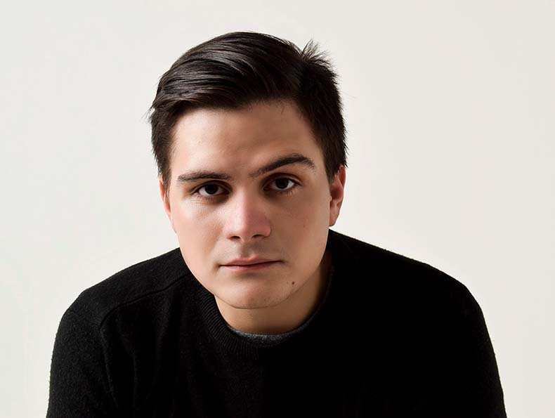

Gregg Haniel Spinetti

Summary
Diseñador Gráfico con cuatro años de experiencia, egresado del
Instituto de Diseño de Caracas —reconocida institución en el
continente americano—. Especializado en Branding, Diseño Editorial
y UI/UX, he completado un Máster en LABASAD y actualmente me
encuentro en la etapa final del Máster de Diseño UI/UX en CEI.
Domino Adobe Creative Suite (Photoshop, Illustrator, InDesign, After
Effects), así como herramientas de prototipado y colaboración
(Figma, Sketch).
He liderado proyectos de desarrollo de marcas, lanzamientos de
productos digitales con campañas internacionales y presentaciones
en Dubái, llegando a ser el director creativo más joven de una
importante empresa en Caracas. Fortalezco continuamente mis
competencias en Diseño de Experiencia de Usuario, enfocándome en
arquitectura de información, responsive design, wireframing,
prototipado y metodologías de design thinking y usabilidad.
Me destaco por mi organización, responsabilidad, disciplina y
oratoria, así como por mis habilidades en redacción, fotografía y
animación digital. En constante formación y búsqueda de soluciones
creativas de alto impacto, busco siempre ser la mejor versión de mí
mismo.
Education
- Egresado en Diseño Gráfico - Instituto de Diseño de Caracas
- Estudios completados en el Instituto de Diseño de Caracas, sumando un total de 138 de creditos
académicos.
- Master en Desarrollo de Marcas - LABASAD
- Capacitación para construir, activar y gestionar marcas. Aportando nuevos puntos de vista y trascendiendo
lo meramente comercial.
- Master en Diseño UX/UI - CEI Madrid
- Conocimientos avanzados en diseño de experiencias de usuario, creación de interfaces intuitivas, y desarrollo
de soluciones interactivas. Aprendí a trabajar con herramientas como Figma y Sketch, así como en la
implementación de sitios web con WordPress, enfocándome en mejorar la usabilidad y la experiencia del
usuario
Work Experience
-
Diseñador Gráfico / Branding & UI/UX Designer en Lexzur (Legal Tech)
- Contribuyendo al desarrollo de campañas de marketing digital que generan más de 500 nuevos clientes.
Lidero el rediseño de la identidad visual de la marca, gestionando su implementación en materiales digitales
y físicos, y participo en la presentación internacional en Dubái (2024). Desarrollo submarcas basadas en
inteligencia artificial, participando en su lanzamiento y en el desarrollo de toda su campaña, y creo materiales
de Diseño Editorial para eventos globales. Colaboro en el rediseño del sitio web de la empresa, optimizando
la experiencia de usuario (UX) y trabajando en diseño UI para mejorar la interacción. Diseño animaciones y
contenido multimedia para redes sociales y presentaciones corporativas. Además, realizo redacción y
traducción de materiales textuales en inglés y español, asegurando coherencia y calidad en la comunicación
multilingüe.
-
Penresa / REO Communications - Medios de comunicación
- Diseño y gestión de contenido para redes sociales, optimizando la identidad digital de marcas. Creación y
desarrollo de manuales de contenido interno y material editorial tanto digital como impreso. Producción de
publicidad para diversos sectores empresariales. Edición de fotografía y postproducción de videos, aplicando
técnicas avanzadas de animación con After Effects. Especializado en Diseño UI, desarrollo de marcas y
manuales de uso. Redacción de piezas informativas estratégicas para branding y comunicación corporativa.
-
Stelle & Fortuna - Licores y publicidad
- Diseñador Gráfico / Director Creativo con experiencia en el sector de licores. Desarrollo de piezas
publicitarias digitales e impresas, incluyendo diseño editorial para revistas, catálogos y material promocional.
Rediseño de marca, optimizando su identidad visual para un enfoque más moderno y funcional. Creación y
supervisión de gigantografías publicitarias y stands para eventos. Diseño UI y desarrollo web para la marca y
nuevos productos. Edición y postproducción de fotografía y video. Liderazgo y supervisión del departamento
de diseño, asegurando coherencia visual y estrategia de branding.
Skills
- Adobe Illustrator - Avanzado
- Adobe Photoshop - Avanzado
- Adobe InDesign - Avanzado
- Adobe After Effects - Avanzado
- Adobe XD - Avanzado
- Adobe Premiere Pro - Avanzado
- Cinema 4D - Básico
- WordPress - Intermedio
- Figma - Avanzado
- Redacción - Intermedio
- Microsoft Office - Intermedio
- Fotografía - Avanzado
Other